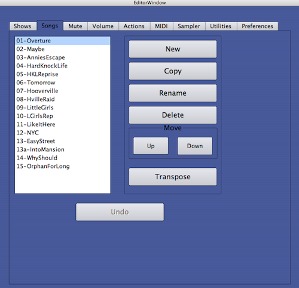
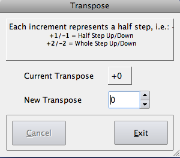
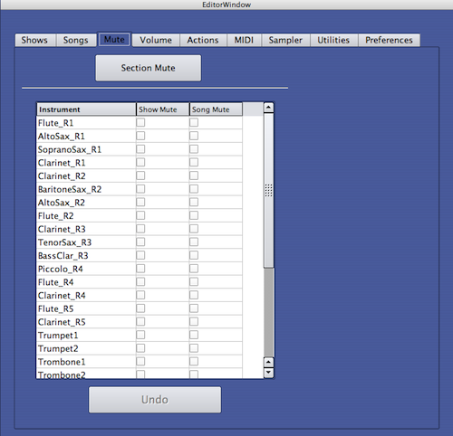
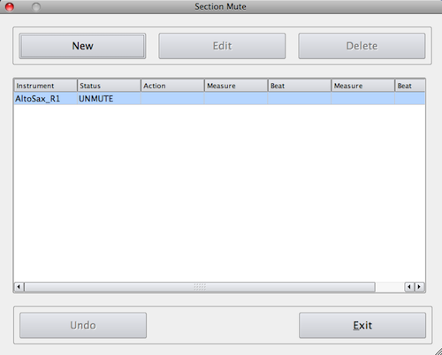
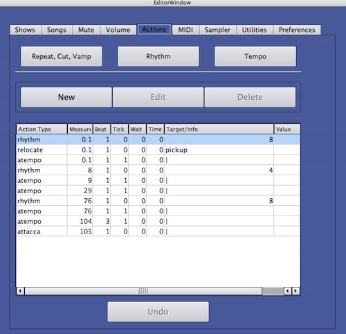
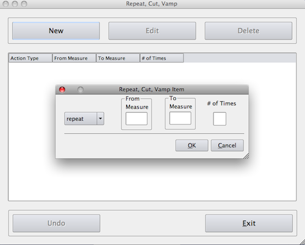
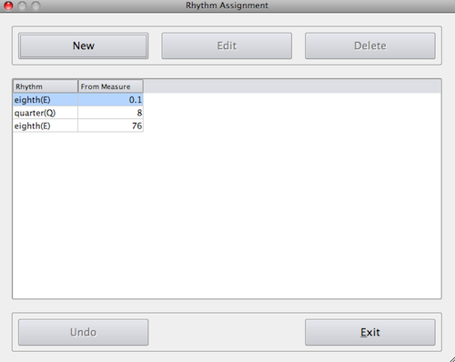
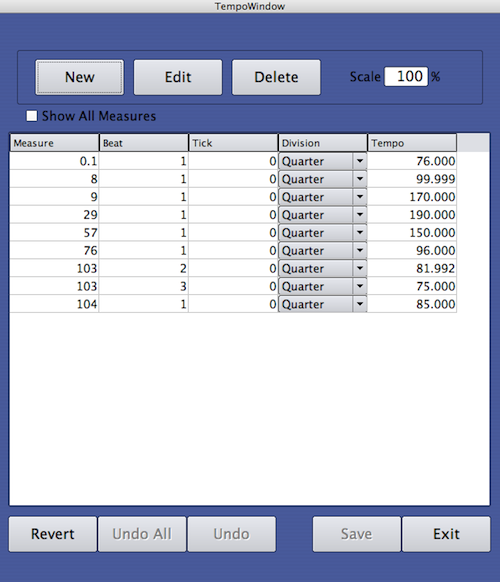

Editing
The Editor Window
Clicking on the Editor button on the upper right portion of the Sinfonia® Player window will take you to the Editor. From here, you can customize your own version of the show.
The Main Editor Screen
The main Editor screen may be thought of in two parts.
- The top line of fields and buttons is the information and navigation center. From here you can identify and select which show and/or song you want to edit. You can identify the currently active Edit window. You can save your work and exit the Editor.
- Current Show - The top left field shows the currently active show. Your editing will only affect this show. If multiple versions of a particular show have been created, you can select one of your alternate versions by clicking on the arrow to the right of the field. NOTE: Sinfonia® considers Acts as individual shows. You will only see the various versions of the currently active show (i.e. Act). See “Loading A New Show” or “Edit Show List” for instructions on switching acts.
- Current Song – Underneath the Current Show field is the Current Song field. This indicates the song that is ready to be edited. Clicking on the arrow to the right of the field will display all the available songs in the show. You can then click on a new song title for editing.
- Save – Click this button to save your work. If no changes have been made (and therefore no work to be saved), it will be grayed-out and inactive. If you have made changes, this button will be highlighted green. We recommend saving often, especially if you are making large amounts of edits!
- Player – Click this button to exit the Editor and return to the Sinfonia® Player. NOTE: You can only exit from the ‘Main’ Editor screen. If you have entered one of the sub-consoles (i.e. Muting, Transpose, etc.), you must first exit the sub-console and return to the Main screen.
- Quit – Click this button to quit out of Sinfonia®
- Underneath the main information console, occupying the majority
of the
screen, are several tabs. Clicking these tabs will take you to the
various sub-consoles where specific editing tasks are accomplished.
Shows Tab
If you plan on doing any editing, it’s a good idea to save multiple versions of your show. This way, if there’s a problem or you make a mistake, you can easily return to a previous or alternate version.
The Shows Console is where you can copy, delete, and rename shows listed in the master show list.
- Clicking “New” will generate a fresh copy of the original show data. These new files will not contain edits and will reflect the shows as they were originally shipped.
- Click “Save Copy As” to create a copy of the selected show. Any edits present in the selected show will be reflected in this new show.
- “Rename Show” allows you to rename an existing show.
- Clicking “Delete” will delete the selected show.
- “New Default Show” is where you can select which show will load when you return to the Player. See “Loading A New Show” for details.
When naming shows, please limit your titles to 14 characters or less and use only letters and numbers. Don’t use any spaces, punctuation marks or other non-alphanumeric characters.
Good Show Names
- jimshow1
- fiddler2v91502
- HSTHSannie1
- bestguysdolls2
Bad Show Names
- jim’s show act 1
- Act 2 Fiddler – 9/15/02 edits
- HarryS.TrumanHighSchoolAnnie1
- Best version of Guys & Dolls Act 2 ever!!!
Songs Tab
This is where you can perform general Song edits, including reordering, renaming and transpositions.
- New – This button allows you to add a song from any existing show. With this button, you could, for example put some incidental music from Act 2 into Act 1. Any new songs will be placed at the end of the song list of the currently active show.
- Copy – This button allows you to duplicate the selected song. Any edits that exist in the selected song will also be copied. The copy will be placed immediately following the source song.
- Rename – This button allows you to rename the selected song. When renaming, please use contiguous alphanumeric characters.
- Delete – This will delete the selected song. Keep in mind you can always put a song that you have deleted back in by using the "New" button (though you may need to create a clean copy of the current act to load the song from).
- Move Up/Down – The selected song will move incrementally in the selected direction.
- Transpose – This button allows you to transpose the selected song up or down in half step increments. See Transpose Edits for more details.
Songs Edit Console |
|  |
Transpose Edits
If a song is too high or low for a particular performer, the Transpose Edit Window allows you to change the key easily. To transpose a song:
- From the Songs Tab, select the song you wish to transpose.
- Click on the Transpose button.
- Click the up or or down arrows to raise or lower your song choice.
- Each increment represents a half step.
- Click Exit
These transpositions are intelligent. Non-pitched interments and other instrumental lines that are not meant to be transposed will be unaffected by Transpose Edits.
These transpositions will affect the entire a song. If you want to transpose just a portion of a song, you may do so in the Actions Tab described later in the manual.
***Save your work by clicking the SAVE button***
Transpose Edit Window |
|  |
Mute Tab
The Mute Tab will take you to the muting sub-console.
You will want to customize Sinfonia® to mute any instruments that are being performed by traditional instruments. This way, Sinfonia® only covers the parts that are not present in your usual ensemble. You can mute instruments on a show basis, on a song basis or even for just a small portion of a song. You can also unmute instruments that may have been previously muted. All these tasks can be accomplished in the Mute sub-console.
When you enter the Mute sub-console, you will see a large box with a list of all the instruments scored in the show. Next to each instrument is a Show Mute box and a Song Mute box.
- To mute an instrument for the entire show, click on the instrument’s corresponding Show Mute check box.
- To mute an instrument for an individual song:
- Make sure your desired song is in the Current Song field.
- Click on the instrument’s corresponding Song Mute check box.
Mute Edit Console |
|  |
There are times when it makes sense to mute and unmute instruments for just a portion of a song. For example, if you are performing a musical with four reed books, but you only have two reed players, you would probably show-mute Reeds 1 and 2 in Sinfonia® and give these parts to your acoustic players. However, there might be a 16 bar section of one song where there is a particularly interesting phrase written for Reeds 3 & 4, while Reeds 1 & 2 are tacit. You might then want to move your acoustic players to the Reed 3 & 4 books just for that section.
The easiest way to accomplish this is through the Section Mute window. Section muting is convenient because it allows you to specify a duration that your muting or unmuting will last; in so doing, it automatically performs the step of re-muting or re-unmuting the instrument at the end of the duration. Section Mute also allows you to perform similar mutes or unmutes on a group of instruments. So to take the example above, you can mute Reeds 3 & 4 together from measures 10 to 27 in one fell swoop.
To accomplish a Section Mute, do the following:
- From the Mute Tab, click on the Section Mute button.
- Select the instrument(s) you wish to mute or unmute.
- Click Continue
- Click New
- Select either either Mute or Unmute from the pop-up menu, depending on what you want to do.
- Type the start measure number for your mute/unmute.
- Hit [tab] on your typewriter keyboard.
- Type the starting beat for your mute/unmute.
- Hit
on your typewriter keyboard. - Type the end measure number.
- Hit [tab] on your typewriter keyboard.
- Type the end beat number.
- Click [Okay]
- At this point, the mute/unmute you are creating will appear in the central Section Mute box display. If you are satisfied with it, click on the Section Mute Exit button at the bottom right portion of the screen.
This will take you to the Section Mute Select window.
You can select multiple instruments if you want.
This will take you to the Section Mute Edit window (See Figure 8 - Section Mute Edit Window). The instruments you selected, as well as their current mute status, will appear in the main central box.
Be sure to enter a number that actually exists for the song in question. If it’s a lettered measure, use a corresponding decimal point for the letter (i.e. a = 0.1; 12b = 12.2)
The cursor will advance to the next field.
Again be sure to enter a beat that makes sense. Don’t type beat 4 if you are working in a piece that is in 3/4 time.
The cursor will advance to the next field.
As before, be sure to enter a number that actually exists for the song in question. If it’s a lettered measure, use a corresponding decimal point for the letter (i.e. 9c = 9.3; 36d = 36.4).
This will return you to the Section Mute Select window, where you can choose additional instruments for different mutes/unmutes or click the Section Mute Select Exit button to return to the original Muting Edits window.
If you are not satisfied with your section mute or unmute, you can click cancel to erase your work and start over. You can also highlight individual mutes/unmute commands and click the Edit Selection button to make changes or the Delete Selection button to delete it. When editing, the [tab] key advances you to the next field.
***Save your work by clicking the SAVE button***
Section Mute Edit Window |
|  |
Volume Tab
The Volume Edit module allows you to apply a percentage adjustment to individual instruments on either a show or song basis. To edit specific songs, be sure the song in question is selected in the top ‘Current Song’ field.
Note: Volumes settings live within a range of 0-127. Therefore, there are limits to the amount you can increase volume. For example, if an instrument is preprogrammed at a volume level of 100, the most you will be able to increase it is 27% to get to the maximum value of 127. Attempting an increase greater than 27%, in this case, will still result in just a 27% boost, since the setting has already reached its upper limit. Generally speaking, volume adjustments should be kept within a 15-20% range. If you feel you need a very large gain, consider lowering the other instruments instead, so the instrument in question stands out more.
It is also possible to adjust volumes for a portion of a song in the Actions Tab.
Actions Tab
Actions Edit Console |
|  |
Repeat, Cut, Vamp Editor
The first button in the Actions Tab allows basic navigational edits. If you want to quickly shorten or extend a song, this is the place to go.
The process for creating these edits is similar to creating sections mutes (clicking on a drop down item or hitting tab within a field will cause the cursor to advance to the next field).
- Click the Repeat, Cut, Vamp button.
- Click Add New
- Make your selection - Repeat, Cut or Vamp.
- Enter the From Measure
- Enter the To Measure
- Enter the # of Times (Repeats Only)
The Repeat, Cut, Vamp edit window will appear.
Your options – Repeat, Cut or Vamp will appear in a drop down menu in a new selection window.
Repeat Cut Vamp Edit Window |
|  |
This number must actually exist in the score. As with Section Mutes, treat letters with their corresponding decimal (12c = 12.3). With repeats and vamps, the ‘From Measure’ is the start of the repeated or vamped section of music. With cuts, the ‘From Measure’ is the jumping point.
With repeats and vamps, the ‘To Measure’ is the end of the repeated or vamped section of music. The software thinks in terms of downbeats, so treat this as the "arrival point" (don’t forget to use actual measures and convert letters to decimals).
For repeats, this is where you specify the number of repeats you want. The integer value should be one less then the total times you want the music to play. That is to say – if you want a section of music to play twice, you would want it to repeat once (# of Times = 1). If the section is only played once, that means it does not repeat at all.
When you hit enter from the ‘# of Times’ field, the new action will appear in the central display box. At this point, you can add additional cuts, repeats or vamps. You can make changes by highlighting an existing item, clicking on Edit Selection, and following the above process. You can delete items by highlighting your choice and clicking Delete Selection.
After you have performed all of your Repeat, Cut and Vamp edits, exit the this sub-console by clicking the Exit button at the lower right of the Repeat, Cut, Vamp Edits window. This will return you to Main Edit screen.
***Save your work by clicking the SAVE button***
Rhythm Editor
Sinfonia® is performed by playing the beat or rhythmic subdivision of the song. When music is initially crafted for Sinfonia®, choices are made as to what are logical and organic rhythms to use to drive the tempo. For example, we may assign a quarter note play for a brisk walking tempo; dotted quarter play for a fast 6/8 march; eight note play for a particularly expressive rubato melody, or a swing pattern for a swing number. Furthermore the play assignment might change within a song as its character changes. (These assignments are noted in the Sinfonia score for the show you are producing as well as in the Play field of the Player window.)
However, these choices are subjective. The Sinfonia® player might prefer to play quarters in a place where we’ve programmed eighths, etc. You can customize the way you perform Sinfonia® in the Rhythm window.
To add a new Play subdivision change:
- Click the Rhythm button
- Click New
The various beat subdivision and pattern options will appear in a pup-up menu within the resulting Rhythm Item window. - Select your desired beat or pattern subdivision.
- Enter the measure where you want the new play subdivision to take
effect.
As always, the measure number must actually exist within the score. Translate lettered measures into their decimal equivalent (i.e. 12c = 12.3). - Hit [OK]
Your new play subdivision will appear in the central display box. At this point, you can add additional play subdivision changes. You can change existing items by highlighting them, clicking on Edit Selection, and following the above process.
You can delete items by highlighting your choice and clicking Delete Selection.
Note: in the Rhythm field, pattern subdivisions are often abbreviated (eight note=E, quarter note=Q, etc.) Here are some common patterns with their full explanations so you may acquaint yourself with how the abbreviations work:
E-Q-E = eight note, quarter note, eight note (a two-beat pattern)
2E-Q = two eight notes followed by a quarter note (also a two-beat pattern)
Etrip = eighth note triplets
HtE = half note tied to an eight note (note that this takes up two and a half beats; in 4/4 time, the next pattern entered should be dQ (dotted quarter) to fill the measure out.
dE swing = the swing/shuffle rhythm formed when a notated dotted-eight + sixteenth note pattern (dE-S) is intended to be played “swung” (like if they were part of a tuplet.)
Note: to enter play or pattern subdivisions at a point other than the downbeat of a measure, use the ADVANCED EDITING window described later in this manual.
WARNING! Do not attempt to delete the first (topmost) rhythm event in the central display box (assigned to measure 1 or whatever the first measure of the song is.) If you do, an error message will appear when you return to the player window and you will be taken back to the editor window to remedy this. If you want to change the first rhythm event to something else, do so by "editing" this event.
After you have performed all of your Play subdivision edits, exit the this sub-console by clicking the Exit button at the lower right portion of the window. This will return you to Main Editor screen.
***Save your work by clicking the SAVE button***
Rhythm Assignment Window |
|  |
Tempo Edits
Sinfonia® is meant to be played by a musician following the conductor or stage action in real time. Nevertheless, there may be occasions where you need to have Sinfonia® (as opposed to the player) control the tempo. For this purpose, there are tempos preprogrammed into most shows. Sinfonia® references these tempos if you enter Go or Cruise mode without otherwise establishing a tempo with the Play keys. A Tempo also references them; hitting A Tempo makes Sinfonia® snap to the preprogrammed values. Note: During normal playing, Play mode will override any programmed settings. But if it is necessary to put Sinfonia® on automatic pilot, and you want to modify the tempos, use the Tempo Editor.
Editing Existing Tempos
To edit specific song tempos, do the following:
- Start by making sure the song in question is selected in the top ‘Current Song’ field.
- Click the [Tempo] button in the Actions Tab.
This will take you to the Tempo Editor console. In the large window, you will see the existing programmed tempo(s) for the song. You might get a warning that a Sinfonia® tempo map does not yet exist for the selected song. If this happens, simply click “OK” to generate a new map. - Either double click inside a specific field, or single click
inside a field and then click the [Edit] button.
If you modify the location (Measure:Beat:Tick values) for a tempo, make sure the location actually exists within the score. Note: there are 480 ticks in a Quarter note. If you use the [Edit] button to modify location, be sure to enter values for Measure, Beat, and Tick and to separate these values with colons (i.e. 3:1:0, 12:2:240) - If necessary, adjust the duration value by clicking inside the gray box. This brings up a pop- up menu from which you can select a rhythmic durational value.
- If you have edited a Tempo with the [Edit] button, click [Finish] to dismiss the dialog box. If you have edited a value after double-clicking on its respective field, simply hit [Enter] on the typewriter keyboard to confirm the change.
- There is an [Undo/Redo] button at the bottom of the screen if you need to back out of a step.
- When you are done editing, click the [Save] button to save your work.
- Click [Exit] to return to the Main Editor screen.
Creating New Tempos
The process is similar for adding new Tempo events. Go to the Tempo Editor console, click the [New] button, and proceed from Step 3 above as if you had hit the [Edit] button. Remember to follow the Measure:Beat:Tick format when locating the Tempo (i.e. 3:1:0, 12:2:240). Also, remember that the Tempo needs to be placed at a location that actually exists in the score. If you want, you can click the “Show All Measures” checkbox to see a full list of the selected song’s measure numbers. Sinfonia® refers to lettered measures by a decimal equivalent. So for example, suppose a song starts with three pick-up measures before measure 1 – and these measures are called A, B and C. If you want to put a new Tempo at the start of the second measure, you would place it at 0.2:1:0.
Scaling Tempos
It’s possible to get a song that may have a great number of Tempo events spanning a short period of time – say, over a few measures. This generally happens when a ritard or an accelerando has been pre-programmed. If you want to change the speed of many adjacent Tempo events, it could be a bit tedious to edit each individually. Therefore we have provided a scaling option, which allows you to apply a percentage adjustment to a range of tempo events. To take advantage of this, do the following from the Tempo Editor:
- In any column, click and drag until all the Tempos you want to change are highlighted.
- Type the desired scale value in the Scale box.
- Hit [Enter] or [Return] on the typewriter keyboard.
You will only see the highlight in the column in which you clicked and dragged. Also, while you will see a box around all the events you have selected, the last one will just have an outline, while the rest will be shaded.
A value of 100 means you are scaling at 100% of the current value – in other words, no change. So for example, if you want to make things 10% faster, you would enter a Scale value of 110%
You will notice all the Tempo values change accordingly in the selected region. The value in the Scale box will return to 100 – representing the new 100%.
(Of course, the way to get the best ritardando, accelerando or any flexible, nuanced performance, is to play this music live with the Play keys.)
At any time, you can click the [Revert] button to revert to the original Tempo map that came with the system. This action cannot be undone.
Warning! Be VERY CAREFUL when doing tempo edits. Failing to follow the protocols above (such as forgetting a colon or putting in an incorrect value in the measure, beat or tick fields) may result in a corrupted, non-functioning tempo file.
One final note: Any changes made to a
song’s tempo file will affect all shows that reference that song. Thus,
the tempos you set for “Tomorrow” in your show file “MyAnnie1” will
appear in the show file “Annie1” (or any other show which contains that
song.)
Tempo Edit Window |
|  |